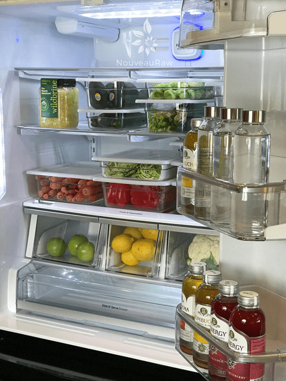

Home from the Grocery Store – Time-Saving Tips
“How to put away my groceries? Seriously? Did you fall off the turnip wagon, Amie Sue?” Perhaps, but that has nothing to do with my posting here. Not all of us are veteran, well-seasoned chefs. Many people come here who are just entering this raw culinary concept and are overwhelmed with the whole idea of eating healthy and clean. This post was created to help you be productive with your time and to help you save money by keeping your ingredients fresh for as long as possible. So let’s hop to it. AND even if you are a veteran of this lifestyle… you still might learn a thing or two here.
To learn how to store your fruits and veggies properly, I have written a post which can be found (
here) that will help you if you need guidance. Purchasing quality food is an investment in your health. Therefore, we want to honor that and enjoy what we consume at the peak of its ripeness. It will look better, taste better, and have more nutrients.
Besides all of that, I have a few things that I always do when I get home from the grocery store. These time-saving tips help me throughout the up and coming week, and I hope they give you some inspiration.
SOAKING Nuts, Seeds, and Grains
- In my recipes, I am always recommending that you soak and dehydrate nuts, seeds, and grains. You can read more about why (here). One trick is to do this right away after purchasing them, rather than waiting until you want to make a recipe. Nothing squashes inspiration more than having to put that “inspiration” on hold until the soaking process is done.
- If you are unsure of how to go about this process or need to know how long to soak them for, please click (here). Select the particular post that talks about the item you have in hand.
- Once you are through with the soaking and dehydrating process, be sure to store them in airtight glass containers in the pantry, fridge, or freezer. I go more in-depth on this in the write-ups for each nut, seed, or grain that you are using.
- Now, you will be prepared well in advance!

VEGETABLE PREP
- While it’s important to wash produce before you eat it, it’s best to store it unwashed, if at all possible. Too much moisture can cause produce to go bad quickly. Wait until you’re ready to eat them before washing.
- With that being said, if you want to create some “fast food” in your life, you can wash them ahead of time. Be sure to dry them thoroughly before storing.
- For storage purposes, I use a lot of cambros in our fridge. These containers help keep things neatly stacked so I can see what I have on hand.
THINGS I PERSONALLY DO:
- I keep my refrigerator stocked with greens and produce.
- Leafy greens are an integral part of a raw diet. These go in salads, soups, juices, smoothies, and can even be used as burrito and taco substitutes.
- Wash, peel, and cut carrot and celery into sticks. They become quick and easy to grab when a light, crunchy snack is desired. Dip them almond butter or other nut butters and you have a wholesome treat on your hands.
- I like to wash, chop, and store fresh veggies once or twice a week to minimize food prep time on other days. I know I mentioned earlier that it is best to wash produce only when ready to use, but if we are going to eat it within the week, I tend to prep it right away. It’s all about timing.
- I tend to buy fruits in large quantities.
- Costco is becoming a great place to find organic fruits at reasonable prices.
- I keep some fresh for sweet, juicy snacks and then I like to dehydrate some for a change of texture, which can also be kept long-term and used in other recipes.
- My Favorite Pre-Made Salad
- I love to make a large container of salad makings. Start by fitting the food processor with a dicing blade. Through the chute, insert cauliflower, broccoli, carrots, celery, Brussel sprouts, and asparagus. You’ll end up with a nice and even shredded salad. I keep it stored in the fridge and when lunch or dinner rolls around I take it out, portion some into a bowl, toss with salad dressing and I am ready to go! You can add “wet” veggies such as cucumber, zucchini, bell peppers, etc. at the time of serving. Throughout the years of doing this, I found that if I added the “wet” veggies to the more “dry” veggies, they would create a slim over time.
- I like to pick one day out of the week to do all of this; soak and dehydrate nuts, seeds, and grains, grocery shop, prep veggies for the week, make batches of crackers, cereals, etc.
- I keep a running grocery list. Once I run out of something, I add it to the grocery list on my phone. If you want a printable grocery list, click (NouveauRaw – Shopping List). This will ensure that you have all your essentials ready when needed.
© AmieSue.com